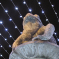

Quand les veues d'Noué sont haûlîndgies dans les rues d'la Ville, v'là tchi nos fait penser ès cantiques, ès podîns et ès présents – et les boutitchièrs à penser ès profièrs.
Même si l'amour des sou est la réchinne dé touos les maux, nou n'peut pon vivre sans. Ni sans les veues nitout. Les veues d'Noué, qué ch'sait des chandelles ou des veues blyîntchantes sus l'arbre dé Noué, sont s'posées d'nos ramémouaither la Veue du Monde tch'arrivit y'a deux millénaithes à seule fîn d'êcliaithi toutes les nâtions.
Aut'fais nou soulait s'accliutchi alentou d'l'âtre à la lueu du feu pouor vilyi duthant l'Hivé. Mais achteu auve l'êlectricité à tathe-larigo j'avons des veues dé toutes les sortes à la maîson pouor nos donner d'la leunmiéthe – et à ches drein des veues à lava r'sont dév'nues populaithes siez les cheins tch'aiment vaie la lueu tchi lampe à la manniéthe d'un feu à tchèrbon ou à bouais.
Bein seu qu'chu monde modèrne est remplyi d'veues. J'avons des veues d'trafi, et des veues sus nos vaituthes et bikes. Les veues d'rue êcliaithent tchiques rues, mais à la campangne la niet nou peut acouo vaie l's êtailes tchi lampionnent et la lantèrne dé pâraîsse. Mais les cheins à prom'ner lus tchians entre les deux veues portent bein souvent eune torche pouor vaie cliai.
Même si j'n'avons pon d'torche d'amain, j'avons probabliément eune veue dans la pouchette ou la bourse – sus eune pièche dé vîngt pénîns ou eune bille dé chîn louis. Car la veue d'La Corbiéthe est iun des symboles dé Jèrri et un anmîn ès navidgants avaû l's années.
Mais né v'là la rouoge veue et jé n'peux pon êcrithe d'aut'!
Geraint Jennings
Viyiz étout: